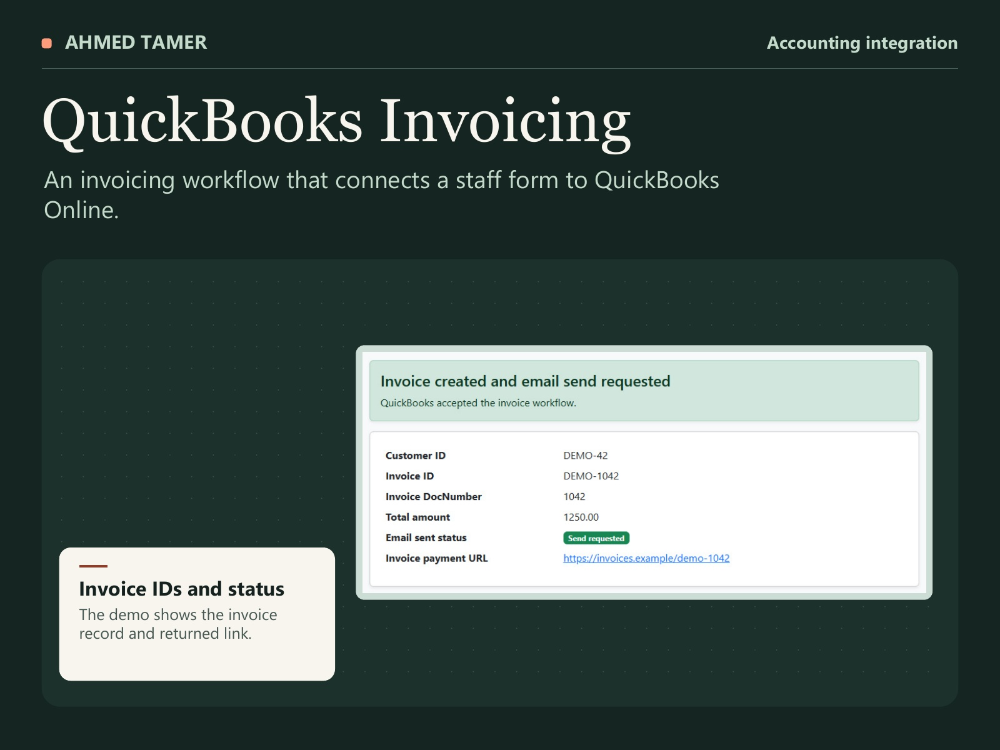
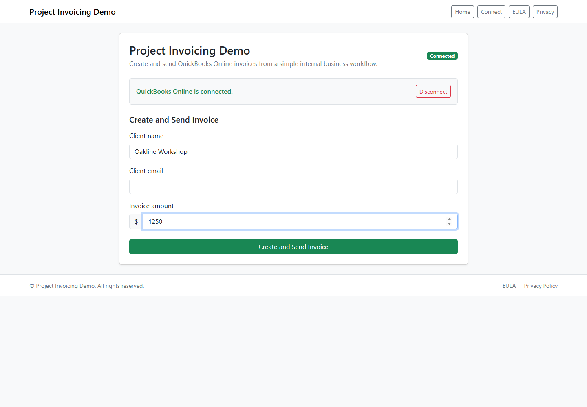
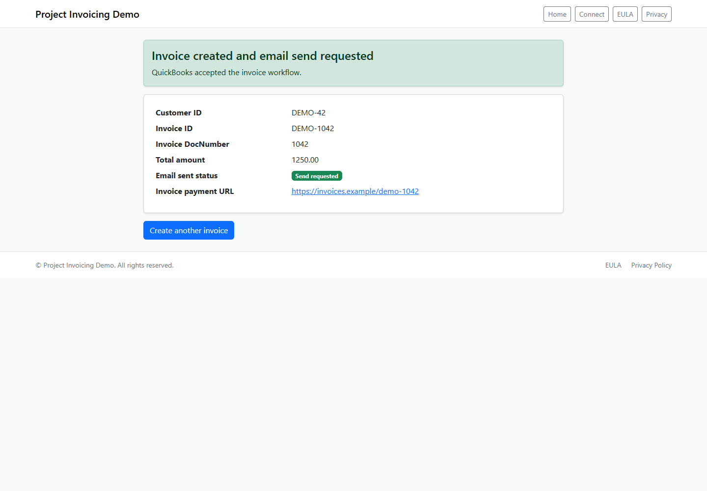

API Integration Developer
QuickBooks Integration for Customer Invoicing
I built a Flask app that connects to QuickBooks Online and sends an invoice from a simple staff form. It looks up customers by email, creates one when needed, and checks whether QuickBooks returned an invoice link. The interface reports the invoice number and flags cases where a usable payment link is unavailable.

Application screens

